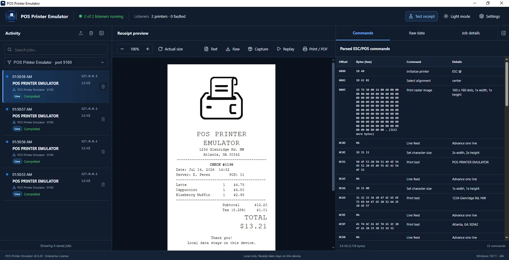

POS developers
Test receipt integrations, formatting, images, and printer commands while you build—without keeping a thermal printer on your desk.
Test and preview POS receipts without purchasing or connecting a physical receipt printer.

Point your POS software at the emulator, send a print job, and inspect exactly what the printer received.
Use RAW TCP/IP with the computer’s address and port
9100.
See receipt output appear immediately in a focused thermal-paper preview.
Inspect parsed ESC/POS commands, raw bytes, warnings, and job details.
Use one local tool to validate receipt output, troubleshoot ESC/POS traffic, and confirm changes before they reach a physical printer.
Test receipt integrations, formatting, images, and printer commands while you build—without keeping a thermal printer on your desk.
Confirm item names, modifiers, prices, totals, and receipt layouts before publishing menu changes to stores.
Reproduce printing issues, inspect raw data and warnings, and identify command problems faster during setup or support.
See exactly what the POS sent.
Render QR codes, barcodes, logos, and text modes.
Comfortable at any hour.
Export receipts with any paid license.
Test paper, cover, cutter, and offline states.
Receipt data stays on this device.
Paperless testing replaces unnecessary physical test prints with fast digital previews—reducing thermal-paper use, coated-paper waste, and the lifecycle emissions associated with printing and disposal.
Loading the community impact total…
Illustrative estimate based on 3⅛-inch thermal paper, an average receipt length of 6 inches, and 2.5 g CO₂e per receipt. Actual receipt length, paper production, and disposal impacts vary. Many thermal-paper coatings can also complicate recycling.
Read the methodology and sourcesSend RAW TCP/IP print jobs to port 9100, see a live receipt preview, and inspect ESC/POS commands in one local Windows application. Receipt content stays on your computer instead of being stored in the cloud.
Choose Trial, Lite at $24.99, Pro, or Enterprise with total listener allowances of 1, 1, 2, and 15 respectively. Paid licenses are permanent; optional annual maintenance is not a software subscription.
Annual Application Maintenance and Support is available in v0.3.26. After maintenance expires, purchased software and existing features keep working; update access and assisted support resume after an optional one-time renewal. Existing paid customers are covered through July 19, 2027.
Install the app, background service, local HTML interface, and required runtime in one straightforward setup.
Download for WindowsThe essentials for installing, testing, and activating POS Printer Emulator.
No. The emulator listens for RAW network-printer traffic and renders the receipt locally on your Windows computer.
Yes. Receipt capture, viewing, history, and activation-key validation all work locally without an internet connection.
Enter your customer or company name, email address, and activation key in the app. A valid key unlocks its Lite, Pro, or Enterprise level immediately without a reinstall.
No. Lite, Pro, and Enterprise are permanent one-time-purchase licenses. Starting with v0.3.26, new purchases include one year of updates and assisted support. Later maintenance renewal is optional and does not disable the purchased application if it expires.
Receipt data stays on the local Windows device. Trial jobs are session-only; Lite, Pro, and Enterprise keep local job history.
Yes. The included uninstaller removes the application, Windows service, firewall rule, shortcuts, and application data.